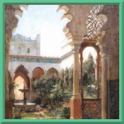

Виды
Каталог всех рас мира Орвей. Нажмите на расу, чтобы перейти к её описанию.
Аль'Ваэра
МахребыMahreby
Люди — дети солнца и песка. Народ пустыни, строящий города из камня и золота.

ДженазиGenasi
Отмеченные печатью стихий: дети воздуха, земли, огня и воды.

АкрабимыAkrabim
Песчаные ювелиры, чьи когти создают красоту, а жала хранят тайны ядов и лекарств.
ТосабеиTosabei
Саблерогие исполины, помнящие каждую клятву, данную под звёздами.

ХушитыHushit
Шепчущиеся с песком. Их глаза видят не только настоящее, но и то, что было и лишь грядёт.

ШуалыShualy
Лисьи дети пустыни. Их смех звенит монетами на базарах, а хитрость не знает границ.
КутрубыKutrub
Проклятые голодом. Они живут на лезвии между разумом и безумием.
Каладан

ПомеранцыPomeranci
Жители южного побережья Ледяного моря. Охотники и рыбаки, живущие рядом с лесом.

СеверянеSeveriane
Суровый народ берегов Ледяного моря, привыкший к невзгодам и не знающий милости.

ИмперцыImpercy
Потомки великой Империи, живущие в центральных регионах Каладана.

ВентыVenty
Открытый и дружелюбный народ полуострова Беневенто, ценящий искусство и философию.

ТарраконцыTarrakoncy
Гордые и воинственные люди засушливого полуострова Тарраконика.
Лесные эльфыWood Elves
Скрытые лесные королевства, обострённые чувства и быстрые ноги.
Высшие эльфыHigh Elves
Солнечные и лунные эльфы с острым умом и знанием основ магии.
Горные дварфыMountain Dwarves
Воины горных чертогов, знатоки боя и владения доспехами.
Холмовые дварфыHill Dwarves
Мудрые хранители предгорий с крепким здоровьем и выдержкой.
Лесной гномForest Gnome
Мастера иллюзий и друзья маленьких зверей.
Скальный гномRock Gnome
Изобретатели и жестянщики, создающие удивительные механизмы.

АльбаниAlbani
Древний народ Померании с голубоватой кожей, чтящий своих предков.
ТифлингиTieflings
Носители чёрной исцеляющей крови и дьявольского наследия.
Задубравье
ДубравцыDubravcy
Коренные люди Задубравья, дети леса, живущие в ладу с природой.

ГаюныGajuny
Дети леса, родственные феям и духам. Молчаливые стражи чащоб.
ПеревертниPerevertni
Оборотни и шифтеры, несущие в себе звериную душу.
ПолуночникиPolunoshniki
Бледные изгои с заострёнными клыками, живущие между мирами.
КремничиKremnichi
Народ гор и каменных недр, потомки древних духов земли, лучшие кузнецы.
ЯрганыYargany
Степные орки, равные кремничам в кузнечном деле и воинской доблести.
ДраконорождённыеDragonborn
Джагатаи Крылатого Улуса — дети степи и пламени, несущие волю крылатых ханов.
ЯщеролюдыYashcherolyudy
Яламы Крылатого Улуса — низшая каста, рабочие спины Великой Орды.